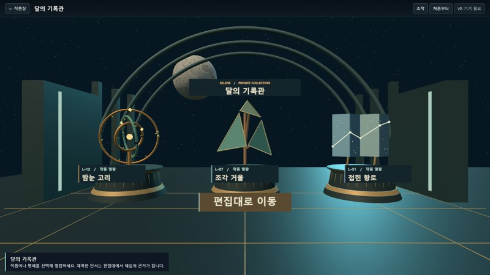
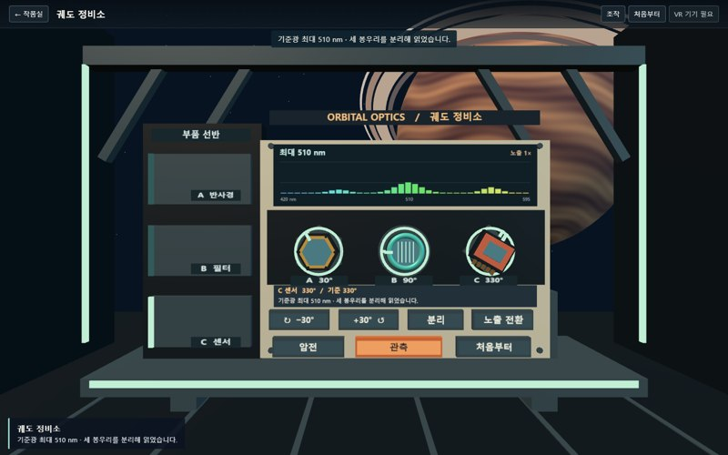
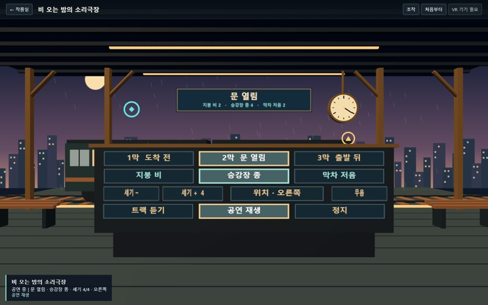
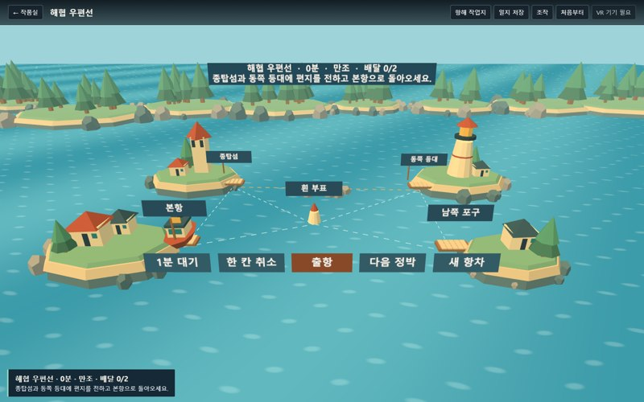

공간 전시, 광학 장비, 한밤의 공연과 섬을 잇는 우편 항로.

세 전시물의 단서를 읽고 나만의 전시 순서와 해설을 정한다.

관측 장비의 부품을 옮기고 돌려 끼운 뒤 광로를 시험한다.

빗소리와 종, 막차 소리를 배치해 짧은 공연을 연주한다.

물때를 읽고 항로를 그려 두 섬에 편지를 배달한다.
카메라와 광선부터 만들기 · 시선 측정실 4단계 →